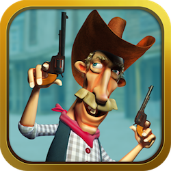

All the apps you need to feel at home on the range. We have the best pick'ins for your long ganders over the hills and through the woods, to keep you entertained while in the saddle.

Happy Cow Tipping is the Most Fun you can have without being on the Farm… Super Addictive & Challenging Strategy Game for Android Devices that takes slingshot games to a New Level of Entertainment.This is not the same old tired clone of a Mad, Angry Bird game… Happy Cow Tipping will challenge you and take boredom and knock it over? You will never look at cows the same ever again without giggling inside and wanting to Push Them Over…

Farm Ninja is an addicting action packed farm themed slashing game. Slash the flying farm animals and listen to their sounds as you try and get high score. Try and slice as many animals as possible without hitting a flying bomb. If you let three animals get away the game will be over. Some people think it's sick and twisted and other hilarious fun!

Hop on up and hang on tight for the ride of a lifetime! Hey there Bull Riders! Take your place amongst PBR greats by showing the world you can tangle with the toughest bulls around. Start your career on the amateur circuit. Win prizes and deck yourself out with even better gear. Sharpen your skills, learn to ride like a pro and work your way all the way to the bright lights of Las Vegas for the PBR World Finals.

TALKING COWBOY does much more than just talks. Instead of only responding to touch or simply repeating what he hears, you can do much more with this crazy ’ol cowboy: aim your weapon and battle in a duel, play the harmonica or strum the strings of your banjo, make your experience into an entertaining movie, and then show it to the world through YouTube, Facebook, or email!
Bacon ipsum dolor amet meatball porchetta tongue, venison cow alcatra brisket landjaeger beef ribs doner shoulder capicola bacon ham hock pork chop. Prosciutto short ribs brisket capicola tri-tip. Corned beef shoulder tenderloin, pork loin tongue sirloin chuck capicola.
A website built by an average Cowpoke for for all the Cowboy’s and Cowgirls.